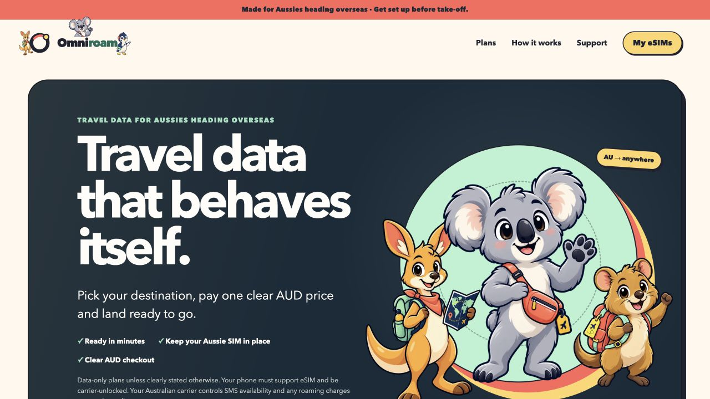
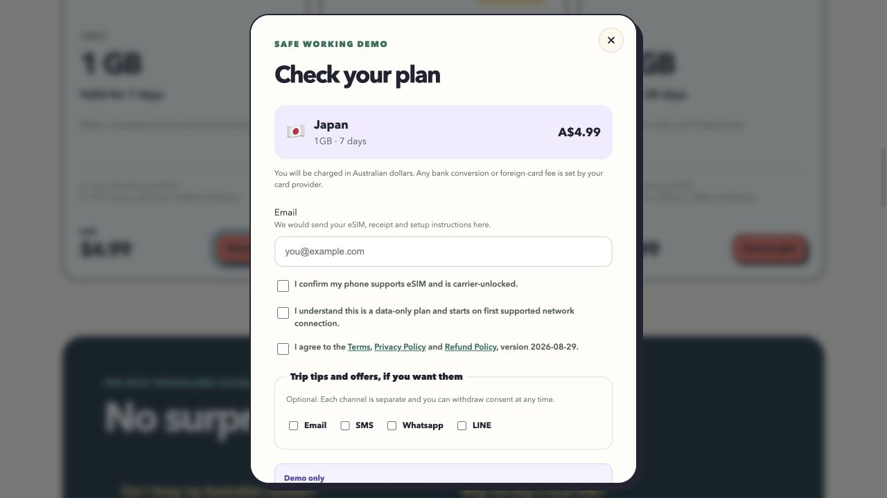

Live storefront
The latest Vercel production deployment is ready. The site remains labelled as a demo while live sales are locked.
Release evidence · 30 August 2026
This page records safe evidence only. Real QR codes, activation strings, recovery tokens, customer records and secret values are deliberately excluded.
The test charged an Opn sandbox card in AUD, read the existing eSIMAccess test profile, stored the delivery for the current order, opened a private first-party order page, returned the live 100 MB balance and delivered the branded installation email to a real founder inbox. It did not purchase another eSIM.
| Stage | Result | Control checked |
|---|---|---|
| Payment | Passed in Opn test mode | AUD amount and test-mode response verified before fulfilment |
| Supplier | Existing reserved profile retrieved | Supplier writes stayed off and no new purchase occurred |
| Persistence | Delivery row verified after insert | The reserved supplier order identifier was not claimed by the new checkout |
| Private delivery | QR, quick install, manual details and own guide rendered | One-use token exchanged for a short HTTP-only session and disappeared from the URL |
| Usage | 0 MB used, 100 MB remaining | Dedicated signed supplier usage endpoint with safe fallback |
| Sent and confirmed opened | First-party template and idempotent retry | |
| Replay | Passed | No second charge, supplier order or email |

The latest Vercel production deployment is ready. The site remains labelled as a demo while live sales are locked.

The production screenshot contains no customer data. The real payment and eSIM retrieval were tested locally against the connected test services.